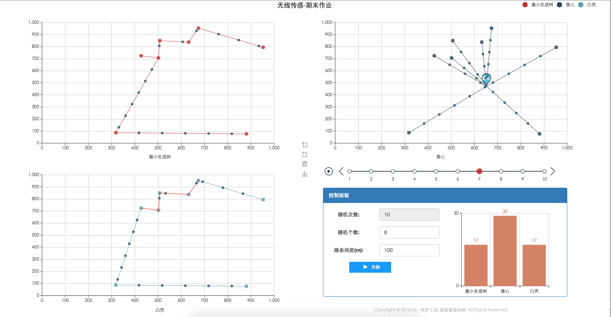

接口说明 Copyright © 2016 by - 软件工程-酱酱酱酱油鲜. All Rights Reserved.
3个路径求法
name 算法 mst 最小生成树 com 重心算法 ch 凸包算法
请求方法
http://www.mbdoge.cn:3021/path/<pathname>?node=<params>
参数说明
参数 必选 说明 node true 所要计算的点集合
数据结构说明
伪代码
//数组里面2个值表示一个点,0:x,1:y Point=[x,y] //示范 var point = [1,3] //坐标轴 (1,3) //数组里放2个点表示一条边 line=[[x,y],[x,y]] //示范 var edge = [[1,1],[3,4]] //表示线段(1,1)-(3,4)
示范
http://www.mbdoge.cn:3021/path/com?node=[[256,191],[470,624],[123,685],[217,237],[87,998]] http://www.mbdoge.cn:3021/path/mst?node=[[256,191],[470,624],[123,685],[217,237],[87,998]] http://www.mbdoge.cn:3021/path/ch?node=[[256,191],[470,624],[123,685],[217,237],[87,998]]
返回值
name 类型 含义 code int 状态，0 为成功 data Object 返回结果 最小生成树 data.weight double 总计权值 data.edgeData Array 边集，无向边 重心 data.point Point 重心 凸包 data.bump Array 凸点集合 data.wai Array 被围点
程序代码示范
JavaScript
(function($){
var node = [[256,191],[470,624],[123,685],[217,237],[87,998]];
$.get("http://www.mbdoge.cn:3021/path/com",{node:JSON.stringify(node)},function(e){
if(e.code==0){
console.log(e.data);
console.log("重心点："+e.data.point);
}
},'json')
})
Java
import java.io.BufferedReader;
import java.io.InputStreamReader;
import java.net.URL;
import java.net.URLConnection;
public class HttpRequest {
public static String sendGet(String url) {
String result = "";
BufferedReader in = null;
try {
URL realUrl = new URL(url);
URLConnection connection = realUrl.openConnection();
connection.setRequestProperty("accept", "*/*");
connection.setRequestProperty("connection", "Keep-Alive");
connection.connect();
in = new BufferedReader(new InputStreamReader(
connection.getInputStream()));
String line;
while ((line = in.readLine()) != null) {
result += line;
}
} catch (Exception e) {
e.printStackTrace();
}
finally {
try {
if (in != null) {
in.close();
}
} catch (Exception e2) {
e2.printStackTrace();
}
}
return result;
}
public static void main(String[] args) {
System.out.println(
sendGet("http://www.mbdoge.cn:3021/com?node=[[256,191],[470,624],[123,685],[217,237],[87,998]]")
);
}
}
c#
using System;
using System.Collections.Generic;
using System.Linq;
using System.IO;
using System.Net;
using System.Text;
namespace Test{
class Program{
static void Main(string[] args){
Console.WriteLine(
HttpGet("http://www.mbdoge.cn:3021/com","node=[[256,191],[470,624],[123,685],[217,237],[87,998]]")
);
//Console.ReadKey();
}
public static string HttpGet(string Url, string postDataStr){
HttpWebRequest request = (HttpWebRequest)WebRequest.Create(Url
+ (postDataStr == "" ? "" : "?") + postDataStr);
request.Method = "GET";
request.ContentType = "text/html;charset=UTF-8";
HttpWebResponse response = (HttpWebResponse)request.GetResponse();
Stream myResponseStream = response.GetResponseStream();
StreamReader myStreamReader = new StreamReader(myResponseStream, Encoding.GetEncoding("utf-8"));
string retString = myStreamReader.ReadToEnd();
myStreamReader.Close();
myResponseStream.Close();
return retString;
}
}
}
工具方法-api
name 说明 getLineCount 计算一条边上有多少个路由器，并返回坐标 getLinesCount 计算一组边上共多少个路由器，并返回坐标
请求方法
http://www.mbdoge.cn:3021/utils/<api-name>?line=<params1>&padding=<params2>
示范
#一条边 http://127.0.0.1:3021/utils/getLineCount?line=[[256,191],[470,624]] #多条边 http://127.0.0.1:3021/utils/getLinesCount?line=[[[256,191],[470,624]],[[123,333],[470,321]]]
参数说明
参数 必选 说明 line true 所要计算的边 padding false 路由间隔,默认10
返回值
name 类型 含义 data.count int 个数 data.point Point 点集 data.length double 边长 data.dev Object 偏移值
其他工具方法-代码篇
/**
* 计算2点间 的距离
*/
getPointLength=function(node,node2){
return Math.pow( Math.pow(node[0]-node2[0],2)+ Math.pow(node[1]-node2[1],2), 0.5);
},
/**
* 判断点(node3)与直线(node1,node2)的垂足是否在线段(node1,node2)上
*/
isPointInSegments:function(node1,node2,node3){
return (node3[0]>node1[0]&&node3[0]<node2[0])||(node3[0]<node1[0]&&node3[0]>node2[0])
},
// qreal A = (pt1.y()-pt2.y())/(pt1.x()- pt2.x());
// qreal B = (pt1.y()-A*pt1.y());
// /// > 0 = ax +b -y; 对应垂线方程为 -x -ay + m = 0;(mm为系数)
// /// > A = a; B = b;
// qreal m = pt3.x() + A*pt3.y();
//
// /// 求两直线交点坐标
// QPointF ptCross;
// ptCross.setX((m-A*B)/(A*A + 1));
// ptCross.setY(A*ptCross.x()+B);
/****点到直线的距离***
* 过点（x1,y1）和点（x2,y2）的直线方程为：KX -Y + (x2y1 - x1y2)/(x2-x1) = 0
* 设直线斜率为K = (y2-y1)/(x2-x1),C=(x2y1 - x1y2)/(x2-x1)
* 点P(x0,y0)到直线AX + BY +C =0DE 距离为：d=|Ax0 + By0 + C|/sqrt(A*A + B*B)
* 点（x3,y3）到经过点（x1,y1）和点（x2,y2）的直线的最短距离为：
* distance = |K*x3 - y3 + C|/sqrt(K*K + 1)
*/
/**
* 计算点(node3)到线(node1,node2)的距离
*/
getPointToLineLength=function(node1,node2,node3,isSegments){
if (node1[0] == node2[0]){
return Math.abs(node3[0] - node1[0]);
}
if (node1[1] == node2[1]){
return Math.abs(node3[1] - node1[1]);
}
var lineK = (node2[1] - node1[1]) / (node2[0] - node1[0]);
var lineC = (node2[0] * node1[1] - node1[0] * node2[1]) / (node2[0] - node1[0]);
if(isSegments){
var tt = (lineK * node1[0] + node3[0] / lineK + node3[1] - node1[1]) / (1 / lineK + lineK)
var h =[
tt,
-1 / lineK * (tt - node3[0]) + node3[1]
]
if(!this.isPointInSegments(node1,node2,h)){
return null;
}
}
return Math.abs(lineK * node3[0] - node3[1] + lineC) / (Math.sqrt(lineK * lineK + 1));
},
/**
* 计算边上可以放多少个路由器
*/
getLinesLength=function(lines,padding){
var t=0,point= [];
lines.forEach(function(item){
var n1 = item[0].coord,
n2 = item[1].coord,
dev = utils.getPointByPaddingDev(n1,n2,padding),
length = utils.getPointLength(n1,n2),
count = Math.ceil(length/(padding||10))
if(!dev){
console.log(lines);
console.log(item);
}
t+=(count-1);
for(var i = 1;i<count;i++){
point.push({
coord:[n1[0]+dev.devx*dev.devxsym*i,n1[1]+dev.devy*dev.devysym*i],
name:"路由",
});
}
});
return {
count:t,
point:point
}
},
//
getPointByPaddingDev=function(node,node2,padding){
var z = node2[0]-node[0];
var c = node2[1]-node[1];
if(node[0]==node2[0]){
return {
devx:0,
devy:Math.abs(node[1]-node2[1])/padding,
devxsym:1,
devysym:c>0?1:-1
}
}
if(node[1]==node2[1]){
return {
devx:Math.abs(node[0]-node2[0])/padding,
devy:0,
devxsym:z>0?1:-1,
devysym:1
}
}
var k = c/z;
return {
devx : Math.abs(padding*Math.cos(Math.atan(k))),
devy : Math.abs(padding*Math.sin(Math.atan(k))),
devxsym:z>0?1:-1,
devysym:c>0?1:-1
}
}
预览
